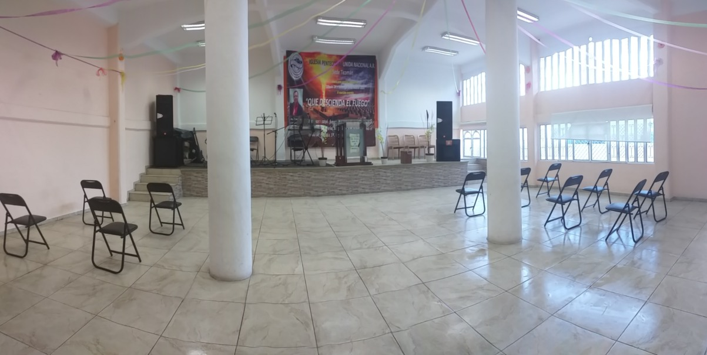

Nos alegra recibirte en nuestra iglesia. Aquí encontrarás un hogar de fe, esperanza y amor, donde caminamos juntos en Cristo.
Somos una Iglesia que predica y bautiza en el Nombre de Jesús, de acuerdo a Hechos 2:38
“Pedro les dijo: Arrepentíos, y bautícese cada uno de vosotros en el nombre de Jesucristo para perdón de los pecados; y recibiréis el don del Espíritu Santo”.
Misión
Alcanzar a las familias por medio del evangelio de Cristo, para que sean restauradas por el Poder de Dios, y afirmadas con la ayuda del Espíritu Santo. Haciendo de cada miembro en cada familia un verdadero discípulo de Cristo, que pueda disfrutar de una vida plena y completa; en la obediencia a Dios y su Palabra, guiados siempre por el Espíritu Santo.
Y les dijo: "Id por todo el mundo y predicad el evangelio a toda criatura." Marcos 16:15
Visión
Llegar a las familias que han sido designadas a este ministerio, trabajando desde los fundamentos con cada miembro de las familias, para que se desarrollen los ministerios, los talentos, las habilidades y los dones, a fin de extender el Reino de Dios y transformas las vidas, por ende las familias y como consecuencia las ciudades.
"Y después de esto derramaré mi Espíritu sobre toda carne, y profetizarán vuestros hijos y vuestras hijas; vuestros ancianos soñarán sueños, y vuestros jóvenes verán visiones." Joel 2:28
Hacemos servicios los martes a las 5:00 p. m. y los domingos a las 12:00 p. m.